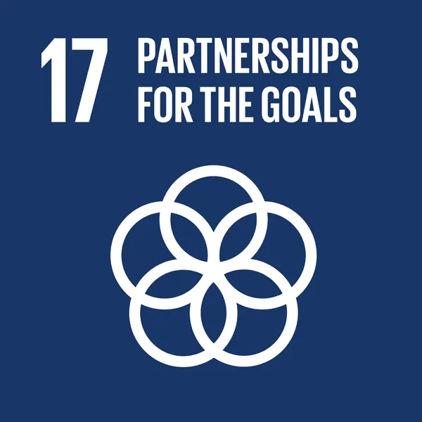

The SDGs can only be realized with strong global partnerships and cooperation.
A successful development agenda requires inclusive partnerships — at the global, regional, national and local levels — built upon principles and values, and upon a shared vision and shared goals placing people and the planet at the centre.
Many countries require Official Development Assistance to encourage growth and trade.
Yet, aid levels are falling and donor countries have not lived up to their pledge to ramp up development finance.
Due to the COVID-19 pandemic, the global economy is projected to contract sharply, by 3 per cent, in 2020, experiencing its worst recession since the Great Depression.
Strong international cooperation is needed now more than ever to ensure that countries have the means to recover from the pandemic, build back better and achieve the Sustainable Development Goals.
TARGETS
Finance
17.1 Strengthen domestic resource mobilization, including through international support to developing countries, to improve domestic capacity for tax and other revenue collection
17.2 Developed countries to implement fully their official development assistance commitments, including the commitment by many developed countries to achieve the target of 0.7 per cent of ODA/GNI to developing countries and 0.15 to 0.20 per cent of ODA/GNI to least developed countries ODA providers are encouraged to consider setting a target to provide at least 0.20 per cent of ODA/GNI to least developed countries
17.3 Mobilize additional financial resources for developing countries from multiple sources
17.4 Assist developing countries in attaining long-term debt sustainability through coordinated policies aimed at fostering debt financing, debt relief and debt restructuring, as appropriate, and address the external debt of highly indebted poor countries to reduce debt distress
17.5 Adopt and implement investment promotion regimes for least developed countries
Technology
17.6 Enhance North-South, South-South and triangular regional and international cooperation on and access to science, technology and innovation and enhance knowledge sharing on mutually agreed terms, including through improved coordination among existing mechanisms, in particular at the United Nations level, and through a global technology facilitation mechanism
17.7 Promote the development, transfer, dissemination and diffusion of environmentally sound technologies to developing countries on favourable terms, including on concessional and preferential terms, as mutually agreed
17.8 Fully operationalize the technology bank and science, technology and innovation capacity-building mechanism for least developed countries by 2017 and enhance the use of enabling technology, in particular information and communications technology
Capacity building
17.9 Enhance international support for implementing effective and targeted capacity-building in developing countries to support national plans to implement all the sustainable development goals, including through North-South, South-South and triangular cooperation
Trade
17.10 Promote a universal, rules-based, open, non-discriminatory and equitable multilateral trading system under the World Trade Organization, including through the conclusion of negotiations under its Doha Development Agenda
17.11 Significantly increase the exports of developing countries, in particular with a view to doubling the least developed countries’ share of global exports by 2020
17.12 Realize timely implementation of duty-free and quota-free market access on a lasting basis for all least developed countries, consistent with World Trade Organization decisions, including by ensuring that preferential rules of origin applicable to imports from least developed countries are transparent and simple, and contribute to facilitating market access
Systemic issues
Policy and institutional coherence
17.13 Enhance global macroeconomic stability, including through policy coordination and policy coherence
17.14 Enhance policy coherence for sustainable development
17.15 Respect each country’s policy space and leadership to establish and implement policies for poverty eradication and sustainable development
Multi-stakeholder partnerships
17.16 Enhance the global partnership for sustainable development, complemented by multi-stakeholder partnerships that mobilize and share knowledge, expertise, technology and financial resources, to support the achievement of the sustainable development goals in all countries, in particular developing countries
17.17 Encourage and promote effective public, public-private and civil society partnerships, building on the experience and resourcing strategies of partnerships
Data, monitoring and accountability
17.18 By 2020, enhance capacity-building support to developing countries, including for least developed countries and small island developing States, to increase significantly the availability of high-quality, timely and reliable data disaggregated by income, gender, age, race, ethnicity, migratory status, disability, geographic location and other characteristics relevant in national contexts
17.19 By 2030, build on existing initiatives to develop measurements of progress on sustainable development that complement gross domestic product, and support statistical capacity-building in developing countries